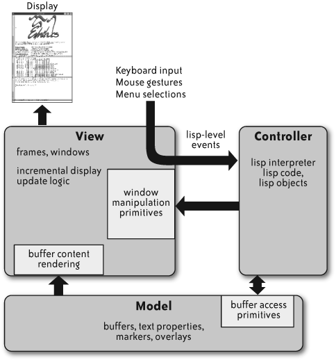

Software Architecture
Table of Contents
Abstract: Recall that because "software design" does not have a consensus on a rigorous definition, we adopted the working definition that it is an "abstract program" written in a very high level language (VHLL). There is no consensus on what architecture is either, and we take a pragmatic view and consider architecture to be a stylistic and structural overview of the design. In doing so, we are following the use of the word "architecture" as in building- or city architectures, and differentiate Architecture v Engineering v Construction. In this article, we illustrate using several examples first and then discuss definitions and clarifications. We also sample the extensive literature on software architecture that exists now.
1 Example: Model-View-Controller (MVC)
- the Model is the underlying representation of the data being manipulated
- the View presents that data to the user
- the Controller takes the user's interactions (keystrokes, mouse gestures, menu selections, and so on) with the View and manipulates the Model accordingly.
- From Wikipedia
2 Dependency Injection
- TBD is a relatively new and very complex pattern. Introducing dependency injection into your project may change a lot of the architecture so its wise to plan ahead. To those who think this pattern is a bit "backwards" - well, it is an implementation of the "Inversion of Control - IoC" concept which does exactly that, it inverts the control flow. The name "dependency injection" is actually misleading, the pattern lets you inject not the dependencies themselves of course, but rather the information to satisfy them.
3 Example: Emacs Architecture

Figure 1: Architecture of Emacs, the all-powerful editor [Chapter 11 of "Beautiful Architecture" book]
4 Examples from Delft Univ Students
- http://delftswa.github.io/ DESOSA 2015, 2016, 2017 489pp, 2018. Has tech reports on the architecture of several open source software products. E.g., OpenRA, Play Framework, AngularDart, Docker, Syncany, Vagrant, Jekyll, Joomla, Kodi, Diaspora, testing frameworks (Mockito, JUnit5), ,editors (Neovim, VSCode) and visualisation (Kibana)., akka, angularjs, contributions, docker, eden, elasticsearch, electron, godot, jenkins, kubernetes, lighthouse, loopback, mattermost, mbedos, osu, phaser, react, spark, threejs, typescript, vuejs, xmage, arduino, jabref, jupyter, kafka, kibana, magento, matplotlib, mockito, neovim, netty, node, scrapy, syncthing, vscode. Highly recommended visit.
- https://github.com/delftswa2017/desosa2017/tree/master/gradle Gradle – covered under Tools
- https://github.com/delftswa2017/desosa2017/tree/master/junit5 JUnit5 – covered under Testing
5 Definitions
5.1 Definition: Software Architecture
- A set of artifacts (principles, guidelines, policies, models, standards, and processes) and the relationships between these artifacts, that guide the selection, creation, and implementation of solutions aligned with business goals
- Software architecture is the structure of structures of an information system consisting of entities and their externally visible properties, and the relationships among them
- A software architecture is a description of the subsystems and components of a software system and the relationships between them
- Subsystems and components are typically specified in different views to show the relevant functional and non-functional properties of a software system
5.2 Definition: Architectural Style
- An architectural style is a description of component types and their topology
- It also includes a description of the pattern of data and control interaction among the components and an informal description of the benefits and drawbacks of using that style
- Architectural styles are important engineering artifacts because they define classes of designs along with their associated known properties
- They offer experience-based evidence of how each class has been used historically, along with qualitative reasoning to explain why each class has its specific properties
- "An architectural style is a coordinated set of architectural constraints that restricts the roles/features of architectural elements and the allowed relationships among those elements within any architecture that conforms to that style."
5.3 Definition: Framework
- A set of assumptions, concepts, values, and practices that constitutes a way of viewing the current environment
- A software framework is a partially complete software (sub-) system that is intended to be instantiated
- It defines the architecture for a family of (sub-) systems and provides the basic building blocks to create them
- It also defines the places where adaptations for specific functionality should be made
5.4 Definition: Architectural Pattern
- An architectural Pattern expresses a fundamental structural organization schema for software systems
- It provides a set of predefined subsystems, their responsibilities, and includes rules and guidelines for organizing the relationships between them
5.5 Definition: Design Pattern
- A design pattern provides a scheme for refining the subsystems or components of a software system, or the relation ships between them
- It describes a commonly-recurring structure of communicating components that solves a general pattern TBD
5.6 Definition: Idioms
- An Idiom is a low-level pattern specific to a programming language
- An idiom describes how to implement particular aspects of components or the relationships between them using the features of the given language
6 Design v Architecture
- Author-TBD ./software-arch-ece-7563.pdf Notes in Software Architecture
7 Class Diagrams vs Block Diagrams
- Class diagrams describe static relationships among classes.
- Block diagrams describe dynamic communication pathways (which use, the lines of a class diagram). A pathway may involve multiple, methods and input parameters.
- A block diagram is coarse-grained. A block may involve multiple, interfaces and classes.
- A block diagram is an object diagram, not a class diagram.
- A system block diagram is probably closest to a UML "deployment" diagram.
8 References
- https://en.wikipedia.org/wiki/Block_diagram
- https://en.wikipedia.org/wiki/Data-flow_diagram
- https://en.wikipedia.org/wiki/Unified_Modeling_Language UML diagrams
- https://www.lucidchart.com/ is a tool that can help you draw the above. Can be installed as a Chrome Ext.
- Diomidis Spinellis, Georgios Gousios, "Beautiful Architecture",
O'Reilly Media, Inc., 432 pp, 2009. Highly readable. Find it on
WSU Library Safari.
- The whole book is a Reference.
- Chapter 11 by Blandy on GNU Emacs is Required Reading.
- Chapter 13 by Bertrand Meyer on Software Architecture: Object-Oriented Versus Functional is Required Reading.
- David Garlan and Mary Shaw, https://www.cs.cmu.edu/afs/cs/project/able/ftp/intro_softarch/intro_softarch.pdf, Jan 1994, CMU-CS-94-166. Reference.
- Shaw, Mary, and David Garlan. Software architecture: perspectives on an emerging discipline. Vol. 1. Englewood Cliffs: Prentice Hall, 1996. Reference.
- Author-TBD ./se-arch-css340-utoronto.pdf U of Toronto Software Architectures, Lecture. Required Reading.
- Author-TBD ./software-arch-ece-7563.pdf Notes in Software Architecture, Recommended Reading.
- Rozanski and Woods, Software Systems Architecture, Hardcover: 576 pages, Publisher: Addison-Wesley Professional; 1 edition (April 30, 2005) ISBN-10: 0321112296. Reference.
- http://aosabook.org/en/index.html The Architecture of Open Source Applications, 201x.
- http://www.nyu.edu/classes/jcf/g22.3033-007/slides/session2/g22_3033_011_c23.pdf Enterprise Architecture Frameworks (EAFs) Pattern Driven EAFs
- https://resources.sei.cmu.edu/asset_files/FactSheet/2010_010_001_513810.pdf What is your definition of software architecture? 2017, 6pp. Required Reading.